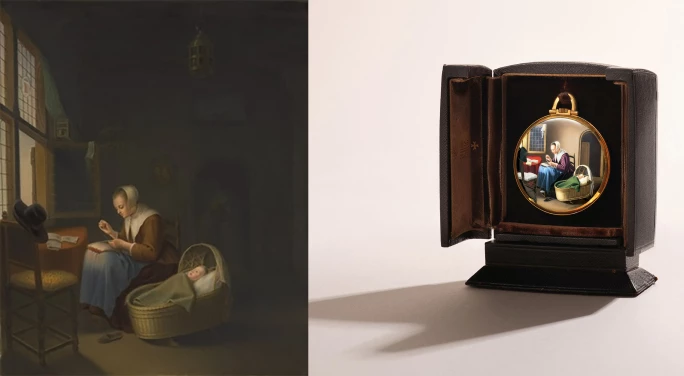
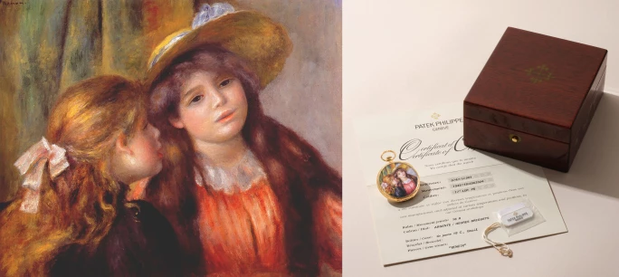
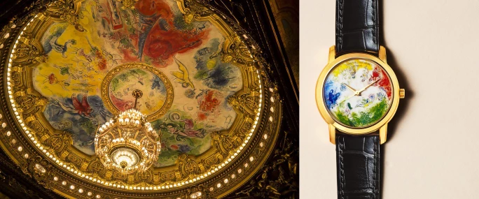

譯自 徐倩怡 · Sotheby's
三位琺瑯大師與三位畫壇巨匠跨時空交匯。與我們一起探索維梅爾、雷諾瓦與夏卡爾的曠世傑作，如何藉由鐘錶界極致考究的工藝，在微縮世界中煥發生機。
微繪琺瑯藝術源於古老傳統，並於歐洲文藝復興時期日益精進，堪稱最考究的裝飾藝術之一，將色彩、光影與永恆定格於烈焰之中。這門手藝由早期的掐絲琺瑯（cloisonné）與內填琺瑯（champlevé）技法發展而來，其後在法國利摩日（Limoges）演變成一門以微縮筆觸與反覆焙燒為標誌的繪畫流派，讓藝術家得以呈現非凡的色調層次與豐富細節。正是在這門要求極高且高度專業的傳統之下，日內瓦三代大師在鐘錶琺瑯藝術領域譜寫出一段非凡的傳承軌跡。每位藝術家均致力淬鍊烈火、色彩與耐心的藝術語言，同時確保這門精妙工藝流傳至今。
香港蘇富比將於4月24日舉行的「珍貴名錶」拍賣會上，呈獻三枚獨一無二且非凡的微繪琺瑯鐘錶。在藝術臻品與高級製錶的交匯處，每件作品皆為獨一無二的臻品，完美結合高超的繪畫技藝與精密的機械結構。這些傑作不僅能讓深諳其圖像意涵的藝術鑑賞家產生共鳴，更能打動重視珍稀特質、精巧工藝與雋永之美的資深鐘錶藏家。
三代傳承的傳奇
奠定這項傳承基石的是查爾斯．博魯茲（Charles Poluzzi，亦稱Carlo Poluzzi，1899至1978年）。二十世紀初，他的創作實踐在傳統工藝與現代製錶之間架起橋樑。博魯茲出生於意大利塞韋索（Seveso），自幼在日內瓦接受訓練，一邊在歷史悠久的日內瓦琺瑯廠（Fabrique d'émaux de Genève）磨練技藝，一邊在美術學院（École des Beaux-Arts）修讀，並在1918年取得文憑。在卡魯日（Carouge）開設個人工作室時，他已憑藉細緻入微的筆觸、優雅的色調與極具氛圍的構圖而享譽業界。博魯茲曾與勞力士、百達翡麗及江詩丹頓等頂尖製錶品牌合作。他將琺瑯工藝從純粹的裝飾，昇華為最高級別的微繪藝術，並為自己贏得當代最頂尖工匠之一的尊崇地位。
在這堅實的基礎上，博魯茲的高徒蘇珊．羅爾（Suzanne Rohr，生於1939年）脫穎而出，成為新生代的領軍人物。羅爾出生於日內瓦，早年因在藝術與歷史博物館（Museum of Art and History）邂逅琺瑯作品而踏上藝術之路。身為裝飾藝術學校（School of Decorative Arts）該班上僅有的一名學生，她順利畢業並榮獲漢斯．威爾斯多夫基金會獎（Hans Wilsdorf Foundation Prize）。1960年，羅爾開設個人工作室，隨即拜入博魯茲門下。在恩師的悉心指導下，羅爾掌握了「日內瓦技法」（Geneva Technique），並淬鍊出一套講究嚴謹紀律與光影觸覺的嚴苛工序。羅爾成熟時期的作品往往需疊加多達25層琺瑯並經歷無數次焙燒，以其通透光澤與細膩情感而備受讚譽。她與百達翡麗長年合作，亦為她提供了重新演繹藝術名作的重要平台，讓她得以極高的還原度與充滿詩意的姿態重塑經典。除了自身的創作，羅爾更在琺瑯工藝日漸式微之際，肩負起傳承重任，將畢生所學傳授給下一代。
這份傳承在羅爾的門生阿妮塔．波切特（Anita Porchet，生於1961年）身上，得到當代最享負盛名的體現。波切特是當今最受推崇的琺瑯藝術家之一。她出生於拉紹德封（La Chaux-de-Fonds），童年時經由教父首次接觸琺瑯工藝，其後於美術學院及洛桑州立藝術學院（École cantonale d'art de Lausanne）接受正規訓練，並於1984年取得證書。在羅爾的指導下，她不僅繼承了精湛技藝，更秉承了對耐性與精準的堅持。自1993年開設工作室以來，波切特建立出以極致細膩見稱的創作面貌，精通掐絲琺瑯、微繪及金箔琺瑯（paillonné）等多種技法。她曾受百達翡麗、伯爵、愛馬仕及香奈兒等頂級品牌委託創作，將僅數厘米的錶面轉化為光彩流轉的藝術珍品。
博魯茲、羅爾與波切特所代表的絕不僅是個人的非凡成就，而是一條在今日僅由極少數工匠延續不絕的傳承紐帶。透過師徒相授與傾注心血，他們成功保存並推動了這門最考究的裝飾藝術。他們的傳奇不僅體現於作品的珍罕與美學，更在於薪火相傳的寶貴知識，使這門脆弱而充滿靈氣的琺瑯藝術，得以在高級製錶的世界中歷久彌新。
江詩丹頓 | 查爾斯．博魯茲 | 臨摹維梅爾畫作《編織蕾絲的荷蘭婦女》，約1951年製
查爾斯．博魯茲為江詩丹頓演繹維梅爾的畫作《編織蕾絲的荷蘭婦女》

[左至右] 維梅爾《編織蕾絲的荷蘭婦女》，瓷板； 江詩丹頓 | 獨一無二及非凡博物館級黃金懷錶，備 查爾斯．博魯茲 繪製的微繪琺瑯作品，臨摹維梅爾畫作《編織蕾絲的荷蘭婦女》，約 1951 年製
作為荷蘭黃金時代的曠世傑作，約翰尼斯．維梅爾（Johannes Vermeer，1632至1675年）的《編織蕾絲的荷蘭婦女》在查爾斯．博魯茲的巧手下，以極度精微的筆觸重現眼前。博魯茲完美轉譯了維梅爾畫中那靜謐的世界與溫馨的家庭場景。畫中荷蘭婦女全神貫注於編織蕾絲的優雅節奏中，身旁的搖籃裡則躺著熟睡的嬰兒。
這件非凡的微繪琺瑯作品在2012年首次亮相，出自日本重要鑑藏家的珍藏，此後成為世界頂級私人收藏。這絕非單純的複製，而是一場充滿詩意的重新演繹，完美交融古典大師的畫作與日內瓦工藝，並將之定格於烈焰與釉彩之中。
百達翡麗 | 蘇珊．羅爾 | 臨摹雷諾瓦油畫《Portrait of Two Girls》，約1997年製
蘇珊．羅爾為百達翡麗演繹雷諾瓦的畫作《Portrait of Two Girls》

雷諾瓦《Portrait of Two Girls》，1890至1892年作，油畫畫布； 百達翡麗 | 「Renoir」型號974/11 | 獨一無二、極為重要及非凡黃金懷錶，備蘇珊．羅爾繪製的微繪琺瑯作品，臨摹雷諾瓦油畫《Portrait of Two Girls》，約1997年製
這枚絕跡市場逾十年的懷錶是蘇珊．羅爾成熟時期的代表作，唯美地重現了皮耶・奧古斯特・雷諾瓦（Pierre-Auguste Renoir）的《Portrait of Two Girls》（1890至1892年作）。這幅現藏於巴黎橘園美術館的畫作，描繪了兩位正在享受悠閒時光的年輕女孩，正是雷諾瓦在1890年代最鍾愛且最具標誌性的題材。羅爾不僅以絲絲入扣的情感與纖毫畢現的細節刻畫出這份恬靜，更於方寸之間，完美重現了雷諾瓦筆觸的極致柔美。
錶殼飾有精雕黃金卷紋，優雅勾勒出琺瑯畫像的輪廓，宛如一件鑲嵌於貴金屬中的微型藝術品。這枚時計無疑是對這位工藝大師的最高致敬，淋漓盡致地展現了定義羅爾藝術底蘊的珍罕技藝、嚴謹精準與獨特美學。此錶更附有原廠證書、標籤及盒子，尤顯珍罕完整。
江詩丹頓 | 阿妮塔．波切特 | 臨摹夏卡爾為巴黎加尼葉歌劇院天花板繪製的濕壁畫，約2012年製

夏卡爾為巴黎加尼葉歌劇院天花板繪製的濕壁畫； 江詩丹頓 | 藝術大師 - 夏卡爾與巴黎歌劇院系列 | 「致敬貝多芬、比才、威爾第及葛路克」型號86090 | 獨一無二及非凡黃金腕錶，備Anita Porchet 繪製的微繪琺瑯錶盤，臨摹夏卡爾為巴黎加尼葉歌劇院天花板繪製的濕壁畫，約2012年製
這枚受江詩丹頓委託創作的腕錶堪稱一項非凡成就，完美捕捉馬克．夏卡爾（Marc Chagall）為加尼葉歌劇院天花板所繪的壁畫中，那份如夢似幻的魔力。阿妮塔．波切特運用「大明火燒琺瑯」（grand feu enamel），以微米級的精準度層層疊加半透明顏料。每一次焙燒都令藍色更加深邃、讓金彩更為靈動，卻也讓作品面臨前功盡棄的風險。直到熬過重重烈焰的考驗，錶盤最終成型，化為夏加爾天馬行空想像的生動縮影。
這枚腕錶將二十世紀最具詩意的藝術視野，凝聚成一件極具親密感的掌中珍寶。夏卡爾那輕盈、充滿靈氣且浸潤著記憶的藝術，在波切特的巧手下，化作一首由懸浮身姿、明亮色彩與情感綺思交織而成的交響曲。